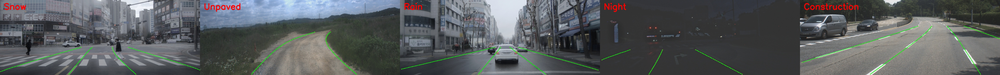

Overview
ETRI-Lane broadens lane-detection evaluation toward Korean urban and suburban driving scenes that are underrepresented in standard benchmarks.
ETRI-Lane is a real-world lane benchmark introduced in our BPLane paper. It contains lane data collected from South Korean cities including Daejeon, Seoul, Hwaseong, Ulsan, and Sejong, covering snow, rain, night driving, construction zones, and unpaved roads.
The annotations are generated through auto-labeling and then refined by a single human annotator for consistency. The benchmark is designed with dedicated training and validation splits.

ETRI-Lane broadens lane-detection evaluation toward Korean urban and suburban driving scenes that are underrepresented in standard benchmarks.